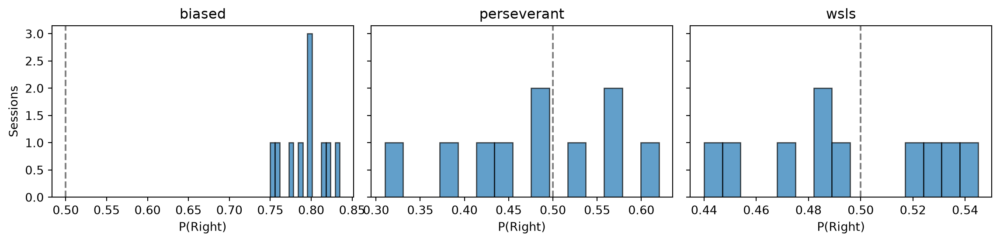
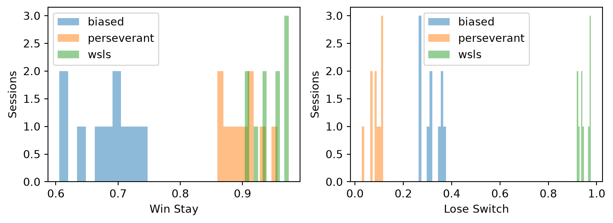

Code
import numpy as np
import pandas as pd
import matplotlib.pyplot as plt
rng = np.random.default_rng(42)We generate synthetic choice sequences from three known strategies so that we have ground-truth labels to validate our models against. The data format matches the trial-level DataFrame produced by matchingp.dataset.load_human_mp_data.
| Strategy | Description |
|---|---|
| Biased | Choose one side with fixed probability \(p\). |
| Win-Stay Lose-Switch (WSLS) | Repeat previous choice after a win; switch after a loss. |
| Perseverant | Repeat the previous choice regardless of outcome, with probability \(p_\text{stay}\). |
In the matching pennies task, the opponent chooses L or R on each trial. For simplicity we use a random opponent that picks each side with equal probability. The player is the “matcher” and is rewarded when their choice equals the opponent’s choice.
Each generator returns a binary choice vector (0 = Left, 1 = Right).
def biased_strategy(n_trials, p_right=0.8, rng=rng):
"""Choose Right with fixed probability p_right."""
return rng.binomial(1, p_right, size=n_trials)
def wsls_strategy(n_trials, opponent_choices, epsilon=0.05, rng=rng):
"""Win-stay lose-switch with small lapse rate epsilon."""
choices = np.zeros(n_trials, dtype=int)
choices[0] = rng.binomial(1, 0.5)
for t in range(1, n_trials):
won = choices[t - 1] == opponent_choices[t - 1]
if won:
ideal = choices[t - 1] # stay
else:
ideal = 1 - choices[t - 1] # switch
if rng.random() < epsilon:
choices[t] = 1 - ideal
else:
choices[t] = ideal
return choices
def perseverant_strategy(n_trials, p_stay=0.9, rng=rng):
"""Repeat the previous choice with probability p_stay."""
choices = np.zeros(n_trials, dtype=int)
choices[0] = rng.binomial(1, 0.5)
for t in range(1, n_trials):
if rng.random() < p_stay:
choices[t] = choices[t - 1]
else:
choices[t] = 1 - choices[t - 1]
return choicesWe generate multiple sessions per strategy to mirror a real experiment with repeated blocks.
def generate_sessions(strategy_fn, strategy_name, n_sessions=10,
n_trials=200, rng=rng, **strategy_kwargs):
rows = []
for sess_idx in range(n_sessions):
opp = make_opponent_choices(n_trials, rng=rng)
if "opponent_choices" in strategy_fn.__code__.co_varnames:
agent = strategy_fn(n_trials, opponent_choices=opp, rng=rng,
**strategy_kwargs)
else:
agent = strategy_fn(n_trials, rng=rng, **strategy_kwargs)
reward = (agent == opp).astype(int)
choice_str = np.where(agent == 1, "R", "L")
opp_str = np.where(opp == 1, "R", "L")
session_code = f"synth_{strategy_name}_{sess_idx:03d}"
for t in range(n_trials):
rows.append({
"participant_code": f"synth_{strategy_name}",
"block": "single",
"block_trial": t + 1,
"overall_trial": t + 1,
"opponent_type": "algo_A",
"opponent_id": "algo_A_v1",
"choice": choice_str[t],
"opponent_choice": opp_str[t],
"reward": reward[t] * 10,
"total_points": int(reward[:t + 1].sum()) * 10,
"session_code": session_code,
"strategy": strategy_name,
})
return pd.DataFrame(rows)
df_biased = generate_sessions(biased_strategy, "biased",
n_sessions=10, n_trials=200, p_right=0.8)
df_wsls = generate_sessions(wsls_strategy, "wsls",
n_sessions=10, n_trials=200, epsilon=0.05)
df_persev = generate_sessions(perseverant_strategy, "perseverant",
n_sessions=10, n_trials=200, p_stay=0.9)
df_all = pd.concat([df_biased, df_wsls, df_persev], ignore_index=True)
print(f"Total trials: {len(df_all)}")
df_all.head()Total trials: 6000| participant_code | block | block_trial | overall_trial | opponent_type | opponent_id | choice | opponent_choice | reward | total_points | session_code | strategy | |
|---|---|---|---|---|---|---|---|---|---|---|---|---|
| 0 | synth_biased | single | 1 | 1 | algo_A | algo_A_v1 | R | R | 10 | 10 | synth_biased_000 | biased |
| 1 | synth_biased | single | 2 | 2 | algo_A | algo_A_v1 | L | L | 10 | 20 | synth_biased_000 | biased |
| 2 | synth_biased | single | 3 | 3 | algo_A | algo_A_v1 | R | R | 10 | 30 | synth_biased_000 | biased |
| 3 | synth_biased | single | 4 | 4 | algo_A | algo_A_v1 | R | R | 10 | 40 | synth_biased_000 | biased |
| 4 | synth_biased | single | 5 | 5 | algo_A | algo_A_v1 | R | L | 0 | 40 | synth_biased_000 | biased |
fig, axes = plt.subplots(1, 3, figsize=(12, 3), sharey=True)
for ax, (name, grp) in zip(axes, df_all.groupby("strategy")):
p_right = grp.groupby("session_code")["choice"].apply(
lambda s: (s == "R").mean()
)
ax.hist(p_right, bins=15, edgecolor="k", alpha=0.7)
ax.set_title(name)
ax.set_xlabel("P(Right)")
ax.axvline(0.5, ls="--", c="grey")
axes[0].set_ylabel("Sessions")
plt.tight_layout()
plt.show()
def wsls_rates(df):
records = []
for sess, sdf in df.groupby("session_code"):
c = (sdf["choice"].values == "R").astype(int)
r = (sdf["reward"].values > 0).astype(int)
stay = c[1:] == c[:-1]
win = r[:-1] == 1
ws = stay[win].mean() if win.sum() > 0 else np.nan
ls = (~stay[~win]).mean() if (~win).sum() > 0 else np.nan
records.append({"session_code": sess, "strategy": sdf["strategy"].iloc[0],
"win_stay": ws, "lose_switch": ls})
return pd.DataFrame(records)
rates = wsls_rates(df_all)
fig, axes = plt.subplots(1, 2, figsize=(8, 3))
for ax, metric in zip(axes, ["win_stay", "lose_switch"]):
for name, grp in rates.groupby("strategy"):
ax.hist(grp[metric].dropna(), bins=10, alpha=0.5, label=name)
ax.set_xlabel(metric.replace("_", " ").title())
ax.set_ylabel("Sessions")
ax.legend()
plt.tight_layout()
plt.show()